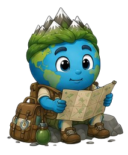

Sobre o projeto:
O WorldGuide é um projeto conceitual desenvolvido para a disciplina de Design Web do 5º semestre do curso de Bacharelado em Ciência da Computação do Instituto Federal de Educação, Ciência e Tecnologia do Ceará (IFCE), sob orientação da professora Ana Beatriz Moreira Campos Fontenele. A proposta da disciplina consiste na elaboração de um projeto completo de interface web. Dentro desse contexto, surgiu o WorldGuide: uma plataforma voltada para o aprendizado de geografia, cultura, curiosidades e informações sobre países ao redor do mundo de forma simples, acessível e divertida. A ideia nasceu da percepção de que grande parte das informações sobre países e culturas encontra-se dispersa em diferentes fontes, muitas vezes apresentadas de forma excessivamente técnica ou extensa para usuários que desejam apenas aprender algo novo de maneira rápida e intuitiva. Assim, o WorldGuide busca reunir conhecimento, exploração e entretenimento em um único ambiente, incentivando a descoberta de diferentes culturas e ajudando a combater estereótipos por meio da informação. Atualmente, o projeto encontra-se em fase de prototipagem e possui caráter acadêmico, sendo utilizado para demonstrar conceitos de Design Web e desenvolvimento de interfaces.
Sobre o autor:
Meu nome é João Igor de Sousa Ferro, tenho 20 anos e sou estudante do 5º semestre do curso de Bacharelado em Ciência da Computação no IFCE. Atualmente possuo grande interesse nas áreas de Engenharia de Software, Desenvolvimento Web e Design de Interfaces, além de considerar futuramente seguir também o caminho da docência e da pesquisa acadêmica. O desenvolvimento do WorldGuide tem sido uma experiência extremamente gratificante, pois permitiu aplicar conhecimentos adquiridos ao longo da disciplina em um projeto que une tecnologia, criatividade e educação. Sempre tive interesse em aprender mais sobre países, culturas e curiosidades ao redor do mundo, mas frequentemente encontrava conteúdos muito extensos ou espalhados por diferentes fontes. Por esse motivo, a criação do WorldGuide surgiu como uma tentativa de reunir esse conhecimento em uma plataforma mais organizada, acessível e amigável. Saber que uma ferramenta como essa pode facilitar o aprendizado de outras pessoas torna o projeto ainda mais significativo. Obrigado por visitar o WorldGuide. Espero que você se divirta explorando o mundo tanto quanto eu me diverti criando este projeto.
Sobre o raiMundo:
O RaiMUNDO é o mascote oficial do WorldGuide. Sua criação surgiu durante o desenvolvimento do projeto, inspirado em personagens de plataformas educacionais que utilizam mascotes para tornar a experiência de aprendizagem mais divertida, próxima e envolvente. (Ex: Duolingo e os mascotes de Perguntados). Visualmente, o RaiMUNDO representa um pequeno planeta terrestre. Apesar de sua arte ter sido produzida com auxílio de inteligência artificial, toda a concepção do personagem, personalidade, características e direcionamento visual foram idealizados para este projeto. Sua personalidade pode ser resumida em três palavras: curiosidade, entusiasmo e inocência. O RaiMUNDO adora aprender sobre o mundo, conhecer novas culturas e descobrir curiosidades sobre diferentes países. Porém, justamente por sua curiosidade, ele frequentemente acaba acreditando em informações incompletas, estereótipos ou ideias populares encontradas na internet. Por isso, muitas vezes ele aparece fazendo perguntas curiosas, comentários engraçados ou reproduzindo conceitos equivocados que serão corrigidos ao longo da experiência do usuário. Essa característica não existe para ridicularizar culturas ou povos, mas sim para representar uma situação bastante comum: o processo de aprendizado. Assim como muitas pessoas, o RaiMUNDO nem sempre sabe tudo de imediato. Ele aprende, questiona, erra e descobre coisas novas junto com o usuário. Ao longo do WorldGuide, o mascote poderá aparecer em diferentes situações, oferecendo dicas, explicações, animações comemorativas e momentos de humor. Seu papel é transformar o aprendizado sobre geografia, cultura e sociedade em uma experiência mais leve, divertida e acolhedora. No fim das contas, o RaiMUNDO é apenas isso: um pequeno explorador do planeta que, assim como seus visitantes, está sempre tentando entender um pouco melhor o mundo em que vive.
